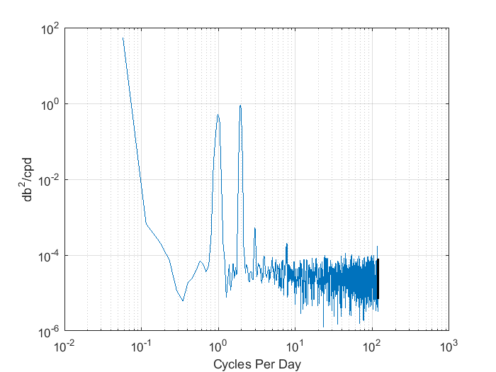

Contents
Ren_data1_week6.m
Overlapping Segments on Spectra
A. Ren, November 9, 2017
create data and reshape into segments
totdatno = 10000;
disp('total data points: '); disp(totdatno);
a = randn(totdatno, 1);
N = 500;
disp('samples in one segment: '); disp(N);
a = reshape(a, N, totdatno/N);
total data points:
10000
samples in one segment:
500
add overlapping segments, each 500 points long, covering the edges
overlapping by 50
indexlist = 251:500:9500;
for i = 1:length(indexlist)
overlapseg(:, i) = a(indexlist(i):indexlist(i)+499)';
end
a = [a overlapseg];
apply Hanning Window
a = a.* (hann(500)*ones(1, size(a, 2)));
take fft of segments
A = fft(a);
compute amplitudes, power of spectra
amp_A = abs(A(1:N/2+1, :)).^2;
amp_A(2:end-1, :) = 2*amp_A(2:end-1, :);
amp_A = amp_A/N;
frequency = (0:N/2)/N;
amp_A_m = mean(amp_A, 2);
error bars
depend only on the number of degrees of freedom of your sample. for N
segments, the degrees of freedom is 2*N
dof = 2*size(A, 2); disp('dof:'); disp(dof)
err_high = dof/chi2inv(0.05/2, dof);
err_low = dof/chi2inv(1-0.05/2, dof);
disp('50% overlapping segments with Hanning Window, use dof = 39*2')
disp('ratio: '); disp(err_high/err_low);
dof:
78
50% overlapping segments with Hanning Window, use dof = 39*2
ratio:
1.8807
plot
figure('Name', 'Segmented Spectra - semilogy with errorbar')
semilogy(frequency, amp_A_m)
hold on
grid on
semilogy([frequency(end-100) frequency(end-100)], ...
([err_low err_high]*amp_A_m(end-100)), 'k', 'LineWidth', 1.8)
ylabel('Energy')
xlabel('Frequency')
ylim([0 2])
title('White noise spectra with 50% overlapping segments, windowing, dof = 39*2')
Monte Carlo Simulation (with Hanning and overlapping segments)
clear a A
testnos = 200;
allrealiz_a = NaN(N, size(amp_A, 2), testnos);
allrealiz_A = NaN(N, size(amp_A, 2), testnos);
for ii = 1:testnos
datno = 10000;
a = randn(totdatno, 1);
a = reshape(a, N, datno/N);
indexlist = 251:500:9500;
for i = 1:length(indexlist)
overlapseg(:, i) = a(indexlist(i):indexlist(i)+499)';
end
a = [a overlapseg];
a = a.* (hann(500)*ones(1, size(a, 2)));
A = fft(a);
allrealiz_a(:, :, ii) = a;
allrealiz_A(:, :, ii) = A;
clear a A
end
amp_mc_A = abs( allrealiz_A(1:N/2+1, :, :) ).^2;
amp_mc_A(2:end-1, :, :) = 2*amp_mc_A(2:end-1, :, :);
amp_mc_A = amp_mc_A/N;
amp_mc_A_spectra200 = mean(amp_mc_A, 2);
figure('Name', 'pdf of white noise data with hanning window - 200 spectra')
h = histogram(amp_mc_A_spectra200(:), 'Normalization', 'pdf');
grid on
ylabel('probability density')
xlabel('energy')
hold on
valsperfr = squeeze(amp_mc_A_spectra200);
valsperfr = valsperfr';
valsperfr_ord = sort(valsperfr);
valsperfr_bot = valsperfr_ord(6, :);
valsperfr_top = valsperfr_ord(195, :);
valsperfr_rati = valsperfr_top./valsperfr_bot;
valsperfr_rati_m = mean(valsperfr_rati);
disp('Monte Carlo : 50% overlapping segments with Hanning Window')
disp('ratio: '); disp(valsperfr_rati_m)
Monte Carlo : 50% overlapping segments with Hanning Window
ratio:
1.8806
Monte Carlo Simulation (NO Hanning and overlapping segments)
clear a A
testnos = 200;
allrealiz_nh_a = NaN(N, size(amp_A, 2), testnos);
allrealiz_nh_A = NaN(N, size(amp_A, 2), testnos);
for ii = 1:testnos
datno = 10000;
a = randn(totdatno, 1);
a = reshape(a, N, datno/N);
indexlist = 251:500:9500;
for i = 1:length(indexlist)
overlapseg(:, i) = a(indexlist(i):indexlist(i)+499)';
end
a = [a overlapseg];
A = fft(a);
allrealiz_nh_a(:, :, ii) = a;
allrealiz_nh_A(:, :, ii) = A;
clear a A
end
amp_mc_nh_A = abs( allrealiz_nh_A(1:N/2+1, :, :) ).^2;
amp_mc_nh_A(2:end-1, :, :) = 2*amp_mc_nh_A(2:end-1, :, :);
amp_mc_nh_A = amp_mc_nh_A/N;
amp_mc_nh_A_spectra200 = mean(amp_mc_nh_A, 2);
figure('Name', 'pdf of white noise data - 200 spectra')
h = histogram(amp_mc_nh_A_spectra200(:), 'Normalization', 'pdf');
grid on
ylabel('probability density')
xlabel('energy')
hold on
valsperfr = squeeze(amp_mc_nh_A_spectra200);
valsperfr = valsperfr';
valsperfr_ord = sort(valsperfr);
valsperfr_bot = valsperfr_ord(6, :);
valsperfr_top = valsperfr_ord(195, :);
valsperfr_rati = valsperfr_top./valsperfr_bot;
valsperfr_rati_m = mean(valsperfr_rati);
disp('Monte Carlo : 50% overlapping segments, NO Hanning Window')
disp('ratio: '); disp(valsperfr_rati_m)
Monte Carlo : 50% overlapping segments, NO Hanning Window
ratio:
2.1298
error bars
depend only on the number of degrees of freedom of your sample. for N
segments, the degrees of freedom is 2*N. but does the window cause a
scaled value of the error, from an altered degrees of freedom?
going to try the values in the table: suggests 4/3 (Thomson and Emery),
and 3/4 (Priestley)
dof = 2*size(amp_A, 2) *(4/3);
err_high = dof/chi2inv(0.05/2, dof);
err_low = dof/chi2inv(1-0.05/2, dof);
disp('50% overlapping segments, 4/3 scaled dof (2nd col), Hanning window')
disp('ratio: '); disp(err_high/err_low);
dof = 2*size(amp_A, 2) *(3/4);
err_high = dof/chi2inv(0.05/2, dof);
err_low = dof/chi2inv(1-0.05/2, dof);
disp('50% overlapping segments, 3/4 scaled dof (2nd col), Hanning window')
disp('ratio: '); disp(err_high/err_low);
dof = 2*size(amp_A, 2) *(2/3);
err_high = dof/chi2inv(0.05/2, dof);
err_low = dof/chi2inv(1-0.05/2, dof);
disp('50% overlapping segments, 2/3 scaled dof (2nd col), Hanning window')
disp('ratio: '); disp(err_high/err_low);
dof = 2*size(amp_A, 2) *(7/10);
err_high = dof/chi2inv(0.05/2, dof);
err_low = dof/chi2inv(1-0.05/2, dof);
disp('50% overlapping segments, 70% scaled dof, Hanning window')
disp('ratio: '); disp(err_high/err_low);
dof = 40;
err_high = dof/chi2inv(0.05/2, dof);
err_low = dof/chi2inv(1-0.05/2, dof);
disp('50% overlapping segments, assume dof = 40')
disp('ratio: '); disp(err_high/err_low);
dof = 80;
err_high = dof/chi2inv(0.05/2, dof);
err_low = dof/chi2inv(1-0.05/2, dof);
disp('50% overlapping segments, assume dof = 80')
disp('ratio: '); disp(err_high/err_low);
dof = 20* (8/3);
err_high = dof/chi2inv(0.05/2, dof);
err_low = dof/chi2inv(1-0.05/2, dof);
disp('50% overlapping segments, take 8/3*original segments, Hanning window')
disp('ratio: '); disp(err_high/err_low);
50% overlapping segments, 4/3 scaled dof (2nd col), Hanning window
ratio:
1.7266
50% overlapping segments, 3/4 scaled dof (2nd col), Hanning window
ratio:
2.0770
50% overlapping segments, 2/3 scaled dof (2nd col), Hanning window
ratio:
2.1729
50% overlapping segments, 70% scaled dof, Hanning window
ratio:
2.1319
50% overlapping segments, assume dof = 40
ratio:
2.4287
50% overlapping segments, assume dof = 80
ratio:
1.8657
50% overlapping segments, take 8/3*original segments, Hanning window
ratio:
2.1514
Sea Surface Pressure Data
from Scripps Pier
load data
load('../Week3/scrippspier_auto_p.mat')
find increment where data spacing is all uniform
dataspacing = diff(SP_time_2015_mtlabtime);
inde = find(dataspacing ~= duration(0, 6, 1), 1, 'first');
disp('time increment non-uniform after: ');
disp(SP_time_2015_mtlabtime(inde))
disp('record starts: ')
disp(SP_time_2015_mtlabtime(1))
time increment non-uniform after:
04-Feb-2015 09:24:36
record starts:
31-Dec-2014 16:00:05
check
figure('Name', 'Data for month of January 2015')
plot(SP_time_2015_mtlabtime(1:inde), SP_press_2015(1:inde))
grid on
xlabel('Time')
ylabel('Pressure (db)')
segments
the entire record is 8312 data points long, with the difference being
361 seconds between each data collection. I will segment it into 2.
This gives at least two weeks covered by each time series. It increases
the degrees of freedom from 2 to 4. I will try using the hanning
window and without the hanning window, but I don't expect much
difference since I only have two segments.
seg1 = 1:inde/2;
seg2 = inde/2+1:inde;
pressuredata = SP_press_2015(1:inde);
pressuredata = reshape(pressuredata, inde/2, 2);
window = 'on';
switch window
case 'on'
extrasegment = pressuredata(2079:2078+4156);
pressuredata = [pressuredata extrasegment'];
pressuredata = pressuredata.* (hann(length(seg1))*ones(1, size(pressuredata, 2)));
case 'off'
end
take fft of segments
PP = fft(pressuredata);
compute amplitudes, power of spectra
N = size(pressuredata, 1);
amp_PP = abs(PP(1:N/2+1, :)).^2;
amp_PP(2:end-1, :) = 2*amp_PP(2:end-1, :);
normalize
PerinDays = days(SP_time_2015_mtlabtime(inde) - SP_time_2015_mtlabtime(1));
alpha = PerinDays/N;
amp_PP = amp_PP * alpha/N;
amp_PP_m = mean(amp_PP, 2);
error bars
depend only on the number of degrees of freedom of your sample. for N
segments, the degrees of freedom is 2*N
dof = 2*size(pressuredata, 2);
err_high = dof/chi2inv(0.05/2, dof);
err_low = dof/chi2inv(1-0.05/2, dof);
x-axis
scale = 1/361 *3600*24;
frequencyaxis = scale*(0:N/2)/N;
figure
figure
loglog(frequencyaxis, amp_PP_m)
hold on
loglog([frequencyaxis(end-20) frequencyaxis(end-20)], ...
([err_low err_high]*amp_PP_m(end-20)), 'k', 'LineWidth', 2)
grid on
xlabel('Cycles Per Day')
ylabel('db^{2}/cpd')
